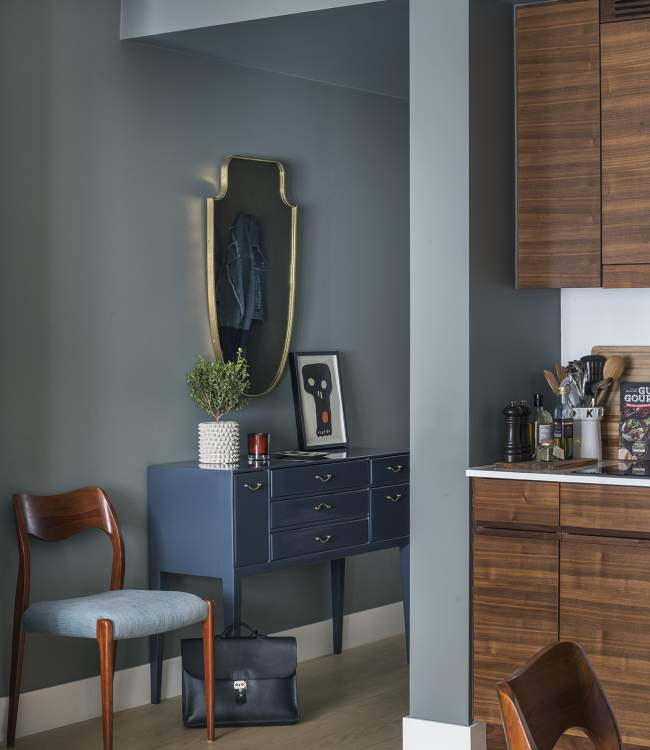

Portfolio Grev Turegatan

Grev Turegatan
This apartment, in the very center of Stockholm, had a good foundation with brand new kitchen and bathroom as well as a generous walk in closet adjoining the master bedroom. No renovation was needed but a darker color palette was implemented to make this space handsome and packed with style.
Rich textiles and soft hand knotted rugs were custom made to fit each space further enhancing the color theme, seamlessly tying the rooms together. A custom build bookcase flanks the velvet sofa, hosting first editions and old antique dictionaries of various subjects, all handpicked and selected with the clients interests in mind.
To add further vintage feel to the space, a Louis Vuitton trunk from the early 30´s was purchased at auction.